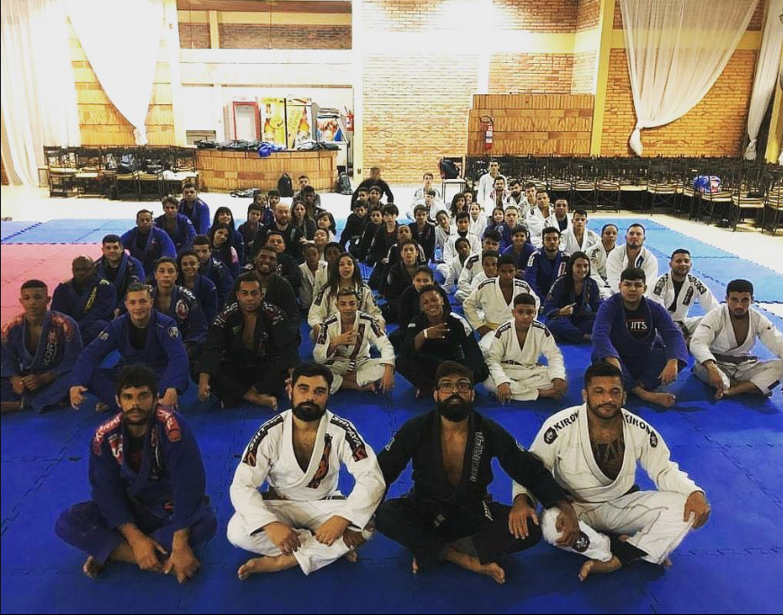
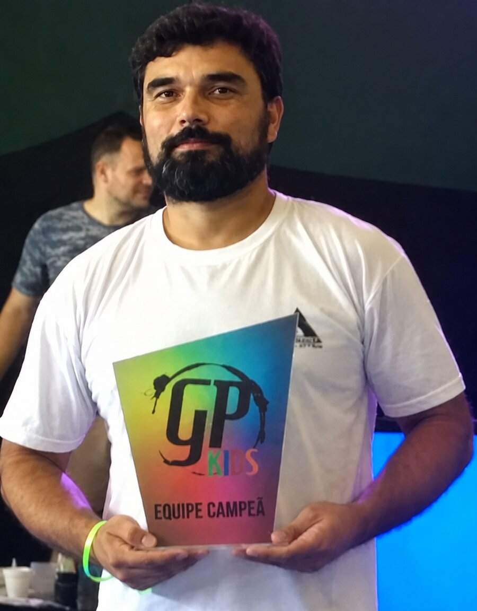

Nossa história
Mais que um esporte.
Uma filosofia e mudança de vida.
Conheça a história do Projeto Gurizada, desde 2015, com grandes conquistas e vitórias no Jiu-Jitsu e na transformação social.

Quem somos
Tradição construída através da disciplina
O Projeto Social Gurizada iniciou oficialmente sua trajetória em 21 de junho de 2015, data da primeira publicação que marcou o nascimento de um sonho: utilizar o esporte como instrumento de transformação social. Desde o primeiro dia, o projeto foi idealizado com o propósito de oferecer muito mais do que aulas de Jiu-Jitsu. A missão sempre foi formar cidadãos, fortalecer famílias e criar oportunidades para crianças e adolescentes por meio da disciplina, do respeito e da dedicação ao esporte.
Ao longo dos anos, o Projeto Social Gurizada consolidou-se como uma referência na formação de jovens atletas e na promoção da inclusão social. O trabalho desenvolvido dentro e fora dos tatames passou a transformar a realidade de inúmeras crianças, proporcionando um ambiente seguro, acolhedor e comprometido com valores como humildade, perseverança, responsabilidade e espírito de equipe.
O reconhecimento desse trabalho veio rapidamente. Em 2017, apenas dois anos após sua fundação, o Projeto Social Gurizada conquistou o título de Equipe Top Ranking Kids da Federação Gaúcha de Jiu-Jitsu, resultado que simbolizou não apenas o excelente desempenho esportivo de seus atletas, mas também a seriedade da metodologia aplicada e o compromisso com a formação das novas gerações.
Desde então, o projeto vem acumulando importantes conquistas em competições, formando atletas de destaque e ampliando sua atuação na comunidade. Entretanto, o maior patrimônio do Projeto Social Gurizada continua sendo cada criança que encontrou no esporte uma oportunidade de crescimento pessoal, desenvolvimento emocional e construção de um futuro melhor.
Mais do que conquistar medalhas, acreditamos que o verdadeiro pódio está na transformação de vidas. Cada faixa conquistada representa disciplina. Cada competição ensina superação. Cada treino fortalece valores que acompanharão nossos alunos por toda a vida.
Hoje, o Projeto Social Gurizada segue firme em sua missão de promover o Jiu-Jitsu como ferramenta de educação, inclusão social e desenvolvimento humano, mantendo o compromisso que inspirou sua criação em 2015: formar campeões no tatame e cidadãos para a vida.
O que nos move
Missão, visão e valores
Nossa missão
Promover a inclusão social por meio do Jiu-Jitsu, oferecendo às crianças e aos adolescentes um ambiente de aprendizado, disciplina, respeito e desenvolvimento humano, contribuindo para a formação de cidadãos conscientes e preparados para os desafios da vida.
Nossa visão
Ser reconhecido como um dos principais projetos sociais de Jiu-Jitsu do Rio Grande do Sul, transformando vidas por meio do esporte e inspirando novas gerações a acreditar que dedicação, educação e perseverança são os caminhos para um futuro melhor.
Nossos valores
Respeito acima de tudo. Disciplina como fundamento do crescimento. Inclusão e igualdade de oportunidades. Compromisso com a formação humana. Ética, humildade e espírito esportivo. Perseverança para superar desafios. Trabalho em equipe e fortalecimento da comunidade. Excelência dentro e fora dos tatames.
Linha do tempo
Nossa jornada
Fundação
O Projeto Social Gurizada iniciou oficialmente sua trajetória em 21 de junho de 2015, data da primeira publicação que marcou o nascimento de um sonho:
Primeiros campeões
Em 2017, apenas dois anos após sua fundação, o Projeto Social Gurizada conquistou o título de Equipe Top Ranking Kids da Federação Gaúcha de Jiu-Jitsu,
Nossa fase de 2017 até agora
Hoje, o Projeto Social Gurizada segue firme em sua missão de promover o Jiu-Jitsu como ferramenta de educação, inclusão social e desenvolvimento humano, mantendo o compromisso que inspirou sua criação em 2015: formar campeões no tatame e cidadãos para a vida.
O Jiu-Jitsu transforma
Cada treino representa uma oportunidade de aprender, evoluir e superar limites.
Comece sua jornada